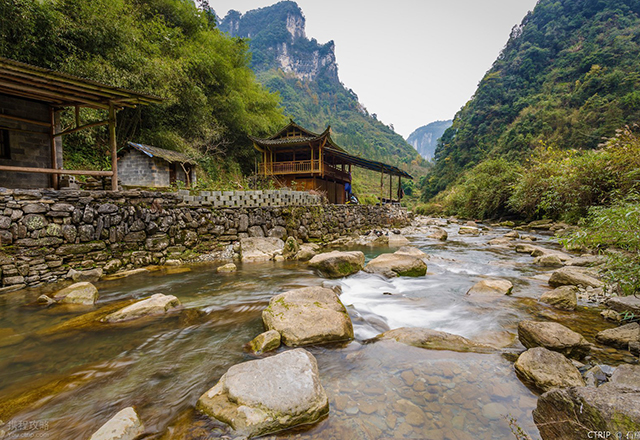
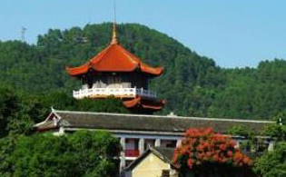
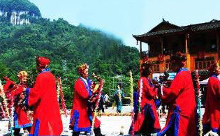
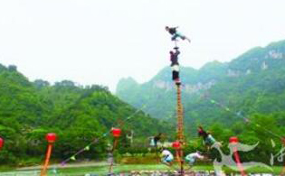
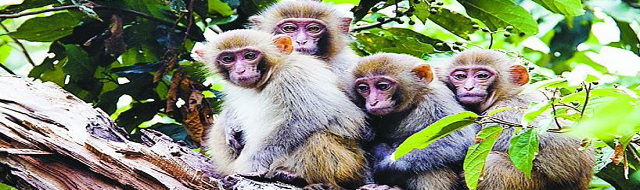

地理概况
吉首，简称吉，湘西土家族苗族自治州州府，湖南省县级市。市境东南部与泸溪县、西北部与花垣县、西南部与凤凰县、北部与保靖县和古丈县毗邻。吉首位于北纬28°08′～28°29′、东经109°30′～110°04′之间。总面积1078.33平方千米，2016年吉首市城市建成区面积达29.4平方公里。吉首地处武陵山区腹地，背靠武陵山，吉首的气候为典型的亚热带季风性湿润气候。
民族文化
湘西的地域文化神秘如山岚，使武陵山脉起伏连绵的山峰隐约于古老的巫傩中。走进湘西，无不让人感受到湘西饮食文化中主要的内核，那就是湘西的正宗味道“酸辣”。湘西饮食的味道，立足于武陵山区的物产、气候，多取材本地丰富的资源，借助特有气候条件，形成酸、辣、鲜、腊的特色，自成一家。吊脚楼是湘西民居中颇为流行的一种传统建筑形式，土家、苗、汉等民族都有建吊脚楼的习俗，以土家山寨中最为常见。吊脚楼的形成，既有气候环境的因素，也有一定的历史成因。湘西雨水多，云雾多，空气潮湿，加之山中野兽、毒蛇出没，为适应山区环境，古时即有干阑式建筑。后逐渐演变而成吊脚楼。
  
特有动物
截至2013年，吉首市有陆生脊椎野生动物42科108种，其中鸟类16科48种、兽类15科30种、爬行类6科16种、两栖类5科14种。属国家一级保护的野生动物有金雕、白颈长尾雉2种；属国家二级保护的有猕猴、穿山甲、大鲵、小灵猫、锦鸡、虎纹蛙及猛禽类共28种；属省三级保护的有银星竹鼠、猪獾、扫尾豪猪、鼬獾、黄鼬、青鼠、小麂、环颈雉、红嘴相思鸟、野猪、灰鼯鼠、尖吻蝮、银环蛇、眼镜蛇、五锦蛇、滑鼠蛇、中华大蟾蜍、棘胸蛙、画眉、啄木鸟、华南兔等41种。猕猴、小灵猫主要分布在社塘坡、寨阳、矮寨等乡镇，金雕主要分布在社塘坡乡齐心村，其余种类分布较广泛。
木鼓舞
湘西苗族鼓舞历史悠久，成为苗族人民最喜爱的舞蹈艺术形式，是湘西苗族的圣物。种类多达数十种，常见的有花鼓舞、猴儿鼓舞、女子单人鼓舞、男子单人鼓舞、团圆鼓舞等。苗族鼓舞的表演蕴含了苗族人民的虔诚信仰和勇于创造、顽强拼搏的民族精神。2006年，被列入第一批国家级非物质文化遗产名录。